扩散模型应用·基于文本的图像编辑
\[ \newcommand{\x}{\mathbf x} \]
封面来自 CivitAI.
DiffusionCLIP
CVPR 2022 2021.10.06
DiffusionCLIP[1] 旨在用文本编辑图像，之前人们常使用 GAN inversion + CLIP 来做这个任务，但是作者指出 GAN inversion 的能力有限，难以重建原图中在训练集里不常见的部分（比如文章开篇大图展示了一个人把手放在了脸旁，但是 GAN inversion 会把手给去掉，因为大多数训练数据都没有手）。因此，作者希望利用 Diffusion Models 几近完美的重建能力（DDIM）来解决这个问题。
如下左图所示，作者首先用 DDIM inversion 将待编辑的图像转换到隐空间，然后用 CLIP 来微调 score function.
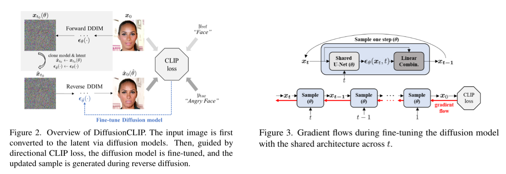
损失函数包含两部分：
Directional CLIP loss： \[ \begin{align} &\mathcal L_\text{directional}(\x_\text{gen},y_\text{tar};\x_\text{ref},y_\text{ref})=1-\frac{\langle\Delta I,\Delta T\rangle}{\Vert\Delta I\Vert\Vert\Delta T\Vert}\\ \text{where}\quad&\Delta T=E_T(y_\text{tar})-E_T(y_\text{ref}),\;\Delta I=E_I(\x_\text{gen})-E_I(\x_\text{ref}) \end{align} \] 其中 \(E_T\) 和 \(E_I\) 是 pretrained CLIP 的文本和图像编码器。使用 directional CLIP loss 而非直接对齐 \(\x_\text{gen}\) 和 \(y_\text{tar}\) 的好处是能防止生成图像多样性降低。
Identity loss： \[ \mathcal L_\text{id}(\hat\x_0(\hat\theta),\x_0)=\lambda_\text{L1}\Vert\x_0-\hat\x_0(\hat\theta)\Vert+\lambda_\text{face}\mathcal L_\text{face}(\hat\x_0(\hat\theta),\x_0) \] 其中 \(\mathcal L_\text{face}\) 是 face identity loss，来自 Arcface 论文。这一项 loss 的添加与否取决于用户的编辑需求。
我们知道扩散模型是分时间步生成的，梯度传播过程可能不是那么直观，所以作者还贴心地绘制了梯度流以供参考，见上右图。在训练完成后，任何输入图像都能被编辑到 \(y_\text{tar}\) 所表示的 domain 之中。另外，作者指出我们还能调整前向/逆向过程的步数来加速编辑过程，实验发现只需要对前 300~600 步，用 40 步前向过程和 6 步逆向过程就足以用来训练了，在推断时用 200 步前向和 40 步逆向来增加细节。
进一步地，如果源图像不在训练分布之中，我们还能用 DDPM 前向过程编码，然后用微调的 DDIM 逆向过程来生成；我们还能连接多个前向-逆向过程来编辑图像；还能直接融合多个不同微调模型的输出来同时编辑多个属性……总之根据不同的应用场景，怎么应用是比较灵活的，如下图所示。
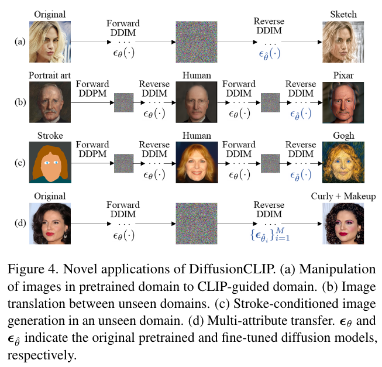
然而，DiffusionCLIP 有一个致命的缺点，即对于每个 \(y_\text{tar}\)，我们都要微调一个模型，这实在是太费时费力了。
点击查看 DiffusionCLIP 的生成样例（摘自官方 repo）


Blended Diffusion
CVPR 2022 2021.11.29
Blended Diffusion[2] 关注的是用文本指导修改指定区域的内容，可以看作是 inpainting 的升级版。具体而言，给定一张图像 \(\x\) 和一段引导文本 \(d\)，再给定一个二值掩码 \(m\)，要求将掩码内的部分改为符合文本描述的内容，同时保持掩码外的部分不变。为了完成这个目标，作者的主要贡献可以分两点叙述：
为了让文本引导图像生成，作者借鉴了 classifier guidance 的做法，但将引导项改成了： \[ D_\text{CLIP}(\x,d,m)=D_\text{cosine}\left(\text{E}_\text{I}(\x\odot m), \text{E}_\text{L}(d)\right) \] 其中 \(\text{E}_\text{I}\) 和 \(\text{E}_\text{L}\) 分别是 CLIP 的图像和文本编码器。作者通过拉近掩码内图像特征与文本特征，达到生成符合文本描述的内容的效果。这种做法在后续的 SDG[3]、GLIDE[4] 等工作中也有应用。然而，原始的 classifier guidance 要求对每一个 noise level 都做引导，意味着我们可能还需要在带噪数据上训练 CLIP——这对于小实验室来说并不可行。事实上，SDG 专门为此提出了一个自监督微调方法；而对于 GLIDE 后面的 OpenAI，训练 CLIP 完全是个小 case。关于这两个模型的详细介绍请见后文。相比而言，Blended Diffusion 的解决方案更简单：直接使用预测的 \(\hat\x_0\)，规避对 CLIP 的任何训练或微调。
CLIP 引导使得掩码内图像符合文本描述，但并不能保证掩码外内容不变。因此，作者又设计了一个针对掩码外内容的引导项： \[ \begin{align} &D_\text{bg}=(\x_1,\x_2,m)=\text{dis}(\x_1\odot(1-m),\x_2\odot(1-m))\\ \text{where}\quad&\text{dis}(\x_1,\x_2)=\frac{1}{2}(\text{MSE}(\x_1,\x_2)+\text{LPIPS}(\x_1,\x_2)) \end{align} \] 结合二者，算法总结如下：
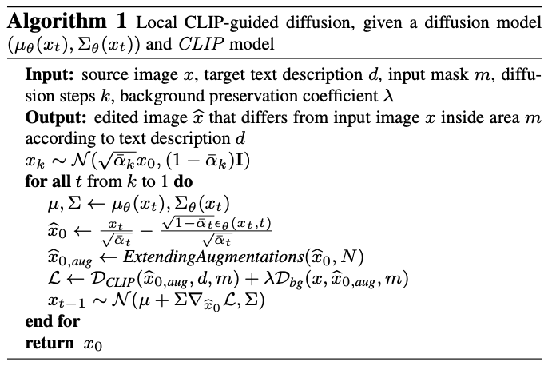
Algorithm 1 分别保证了掩码内外内容都是我们希望的，但并没保证二者能很好地融合在一起。为此，作者充分利用了扩散模型的特点，设计了一个针对 inpainting 任务的采样模式：在每一个时间步，对于掩码内的部分，我们使用扩散模型给出的结果不变；对于掩码外的部分，我们用原图的加噪结果代替（事实上，这个做法早在宋飏刚提出 NCSN 的论文[5]的附录 B.3 里就有所阐述）。这样，虽然当前步依旧不能保证掩码内外的一致连贯性，但下一步能迫使图像向一致连贯的方向生成。另外，这种模式自然满足了掩码外的图像不会被改变的要求，因此我们也不必使用 Algorithm 1 中的 \(D_\text{bg}\) 了。总而言之，新的算法如下：
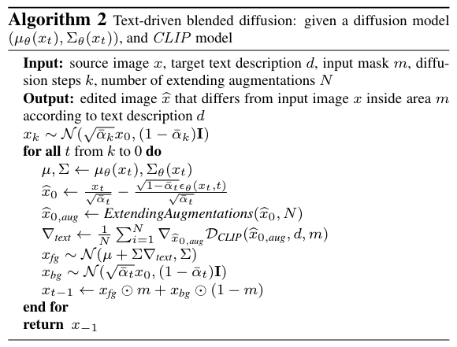
Mask Guidance
有些人将这种针对 image inpainting 的采样模式称为 mask guidance，因为它和 classifier guidance 具有类似的形式。沿用上图记号，即 \(\x_\text{fg}\) 表示扩散模型给出的结果，\(\x_\text{bg}\) 表示原图的加噪结果，那么稍作改写： \[\begin{align}&\x_{t-1}=\x_\text{fg}\odot m+\x_\text{bg}\odot (1-m)\\\implies &\x_{t-1}=\x_\text{fg}+(1-m)\odot (\x_\text{bg}-\x_\text{fg})\end{align}\] 可见 \((1-m)\odot(\x_\text{bg}-\x_\text{fg})\) 就是 guidance 技巧中的偏移项。
另外，论文还提出了 extending augmentations 来增加模型的鲁棒性，以及最后对结果依 CLIP 相似度排序，这里不过多赘述。
话说，这篇论文里展示的效果感觉一般，修改的地方好似贴图，有点违和。另外，其生成的区域甚至还带有噪点，可能是代码哪里有点 bug 吧。
点击查看 Blended Diffusion 的生成样例（摘自官方 repo）


SDG (Semantic Diffusion Guidance)
WACV 2023 2021.12.10
SDG[3] 可以看作是 classifier guidance 的直接推广，支持用文本、图像或二者共同来指导模型的生成。具体而言，原始的 classifier guidance 是用 \(\log p_\phi(y\vert \x_t)\) 做引导，而 SDG 将其推广为 \(F_\phi(\x_t,y,t)\)，根据不同类型的条件设计不同的引导函数。
首先来看文本引导。作者利用 CLIP 模型，设置引导函数为图像、文本特征的点积： \[ F_\phi(\x_t,y,t)=\text{E}_\text{I}(\x_t)\cdot\text{E}_\text{L}(y) \] 其中 \((\x_t,y)\) 是图像文本对，\(\text{E}_\text{I}\) 和 \(\text{E}_\text{L}\) 分别是 CLIP 的图像和文本编码器。我们知道，CLIP 通过对比学习拉近了成对图像和文本的特征，所以该方法能引导生成的图像 \(\x_t\) 去接近给定的文本 \(y\).
由于扩散模型中的每一个 noise level 都要做引导，所以这个 CLIP 模型的图像编码器需要在 noised data 上训练。为此，作者特别提出了一种自监督的微调方法，不需要使用文本数据。设预训练的图像编码器为 \(\text{E}_\text{I}\)，作者将其中的 BN 层更改为了 adaptive BN 层，以便在 scale 和 bias 项中加入时间步 \(t\)，这样得到了一个新的图像编码器 \(\text{E}'_\text{I}\). 由于新编码器仅仅添加了 adaptive BN 层的参数，所以其他参数仍然可以用预训练权重初始化。接下来，我们通过对比学习对齐无噪图像和加噪图像的特征。具体而言，设一个 batch 里有 \(N\) 对无噪-加噪图像对 \(\{\x_0^i,\x_{t_i}^i\}_{i=1}^N\)，分别将 \(\x_0^i\) 和 \(\x_{t_i}^i\) 通过 \(\text{E}_\text{I}\) 和 \(\text{E}'_\text{I}\) 提取特征后，用 CLIP 的对比损失函数拉近成对特征、推远不成对的特征。简单来说，作者巧妙地利用了已有的训练好的图像编码器，把图像-文本对比学习更换成了图像-图像对比学习，从而避开了文本数据。
关于图像引导，作者将其分为了两个方面：图像内容引导和图像风格引导。对于内容引导，设引导图像为 \(\x_0'\)，我们可以对其加噪得到 \(\x_t'\)，那么引导函数设置为： \[ F_\phi(\x_t,\x_t',t)=\text{E}_\text{I}(\x_t)\cdot\text{E}_\text{I}(\x_t') \] 即在特征层面拉近生成图像与引导图像。如此，生成的图像在高层语义上能与引导图像保持一致。比如设引导图像是一只柯基犬，那么生成的图像也会包含一只类似的柯基犬，但也许有不同的位置、姿态等。如果我们想让柯基犬的位置、姿态和引导图像都保持一致，可以考虑在每个特征图上都做匹配： \[ F_\phi(\x_t,\x_t',t)=-\sum_j\frac{1}{C_jH_jW_j}\|\text{E}_\text{I}(\x_t)_j-\text{E}_\text{I}(\x_t')_j\|^2 \]
这里的 \(\text{E}_\text{I}\) 也都是在 noised data 上训练过的编码器。
对于风格引导，我们可以匹配各个特征图的 Gram 矩阵： \[ F_\phi(\x_t,\x_t',t)=-\sum_j\|G_I(\x_t)_j-G_I(\x_t')_j\|^2 \] 至于文本图像混合引导，将上述引导函数做一个加权和即可。
总而言之，SDG 的关键点就在于设计引导函数 \(F_\phi(\x_t,y,t)\) 来达到预期的条件生成效果，如何设计则是比较自由的。
SDG 与 ILVR 的联系
我们在介绍 ILVR[6] 时说（见扩散模型应用·图生图与图像恢复），ILVR 本质和 classifier guidance 是一致的。那么，SDG 作为 classifier guidance 的推广形式，自然也能导出 ILVR. 事实上，对比二者的引导形式，它们的联系还是挺显然的： \[F_\phi(\x_t,\x_t',t)=-\frac{1}{2}\|\phi_N(\x_t)-\phi_N(\x_t')\|^2\] 那么： \[\nabla_{\x_t} F_\phi(\x_t,\x_t',t)=\phi_N(\x_t')-\phi_N(\x_t)\]
点击查看 SDG 的生成样例（摘自论文）
Prompt-to-Prompt
Google 2022.08.02
GLIDE、DALL·E 2、Imagen 等 large-scale language-image models 展现出了令人惊叹的生成能力，但是用它们来做图像编辑却不是一件容易的事，因为对 prompt 的微小改动会导致生成完全不一样的图像。因此，这些模型往往需要用户给定一个 mask 指示需要更改的区域。然而，绘制 mask 一方面多少带来了一些不便，另一方面 mask 掉的区域将被完全无视，丢弃了可能是很重要的信息，导致应用场景受限，例如用户无法更改一个物体的纹理。因此，Prompt-to-Prompt[7] 致力于不需要 mask 的图像编辑方法。
作者探究发现，网络中的 cross-attention layer 能体现出文本和图像之间的语义联系，如下图所示：
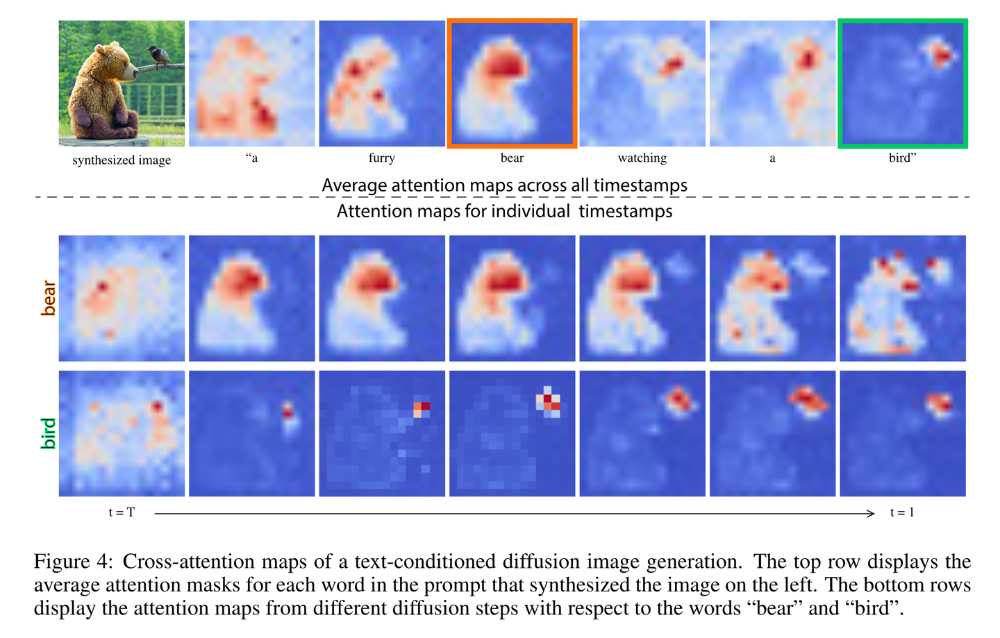
因此，我们可以通过操纵 attention map 来操纵图像语义。具体而言，设原文本描述为 \(P\)，扩散模型生成过程为 \(\x_T\to\cdots\to\x_0=I\)，编辑后的文本描述为 \(P^\ast\)，我们希望得到编辑后的图像 \(I^\ast\). 在 cross-attention layer 中，图像特征 \(\phi(\x_t)\) 经由线性映射后得到 \(Q\)，文本 embedding 经由线性映射后得到 \(K\) 和 \(V\)，那么 attention map 和最终输出为 ： \[ \begin{align} &M=\text{Softmax}\left(\frac{QK^T}{\sqrt d}\right)\\ &\hat\phi(\x_t)=MV \end{align} \] 其中 \(M_{ij}\) 就表示第 \(i\) 个像素与第 \(j\) 个文本 token 之间的关联程度，可视化出来即是上图。为了编辑图像，我们同时以 \(P\) 和 \(P^\ast\) 为条件进行生成，那么在时间步 \(t\) 会有两个 attention map \(M_t\) 和 \(M_t^\ast\)，二者通过精心设计的编辑函数得到新的 attention map \(\hat M_t=\text{Edit}(M_t,M_t^\ast,t)\)，用 \(\hat M_t\) 覆盖原来的 attention map 即可达到编辑的目的。值得注意的是，二者的随机数种子要设置为一样的，这样 \(M_t\) 与 \(M_t^\ast\) 才能有所配对。算法流程如下图所示：
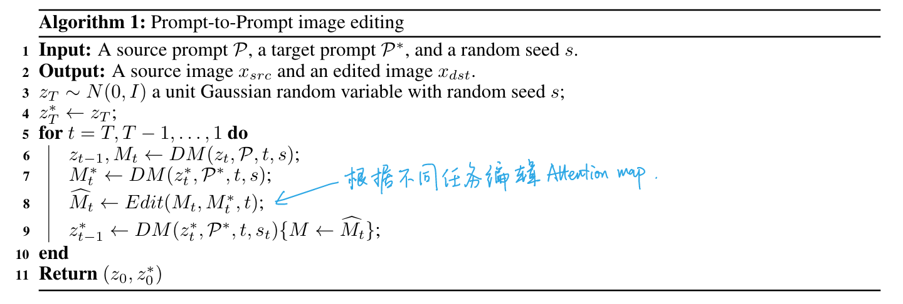
可见，问题的关键在于如何设计编辑函数 \(\text{Edit}(M_t,M_t^\ast,t)\). 作者分别对三种编辑方式——换词、加词、修改某词的权重——设计了操纵 attention map 的方法：
换词：例如将 \(P=\text{a big red bicycle}\) 变成 \(P^\ast=\text{a big red car}\). 这里存在的主要挑战是在生成新的内容的同时要保留原有的图像结构不变。为此，我们可以用原本的 attention map 覆写新的的 attention map，限制 car 出现的位置和大致形状与 bicycle 相同。然而，考虑到替换的物品之间可能有比较大的差异，我们的限制可以“软”一些——只在逆向过程前期覆写： \[ \text{Edit}(M_t,M_t^\ast,t)=\begin{cases}M_t^\ast&&\text{if}\ t<\tau\\M_t&&\text{otherwise}\end{cases} \]
加词：例如将 \(P=\text{a castle next to a river}\) 变成 \(P^\ast=\text{children drawing of a castle next to a river}\). 为了保留两个 prompt 的共同点，作者只覆写原本存在的词的 attention map，保留新词的 attention map 不变。形式化地说，设 \(A\) 表示 \(P^\ast\) 的 token 索引到 \(P\) 的 token 索引的映射，如果不存在映射则为 None，那么： \[ [\text{Edit}(M_t,M_t^\ast,t)]_{i,j}=\begin{cases}[M_t^\ast]_{i,j}&&\text{if}\ A(j)=\text{None}\\ [M_t]_{i,A(j)}&&\text{otherwise}\end{cases} \] 我们也可以用 \(\tau\) 来控制编辑的程度。
修改某词的权重：例如 \(P=\text{a fluffy red ball}\)，我们想让这个球更 fluffy 或者更不 fluffy 一些，那么可以更改 attention map 里 fluffy 这个 token 的权重： \[ [\text{Edit}(M_t,M_t^\ast,t)]_{i,j}=\begin{cases}c\cdot[M_{i,j}]&&\text{if}\ j=j^\ast\\M_{i,j}&&\text{otherwise}\end{cases} \]
基于上述三种编辑方式，作者阐释了更多的应用场景：
- Text-only localized editing：一般而言，换一个名词或者添加形容某物体的形容词就能达到局部修改的效果。
- Global editing：添加一个形容地点、天气、时间等的形容词就能达到全局修改的效果，但是画面的整体结构并不会改变。
- Fader control using attention re-weighing：有时候我们并不好描述一个形容词的程度，例如山上到底有多少雪。这时候修改词权重的方法就给出了很好的解决方案。
- Real image editing：首先使用 DDIM inversion 得到隐变量表示，然后操控 reconstruction 过程. 然而，作者发现在 classifier-free guidance parameter 比较大的时候 DDIM inversion 并不能很好的 reconstruct 原图。为了解决这个问题，作者用 attention map 自动生成 mask 来辅助编辑，但具体怎么做的也没多说。
在 Prompt-to-Prompt 之前，人们要么采用微调（如 DiffusionCLIP）、要么采用 guidance 技巧（如 Blended Diffusion 和 SDG）来实现文本编辑图像，而 Prompt-to-Prompt 首次给出了一个新的思路——更改 backbone 网络的中间值。当然，为了有效地编辑，这种思路要求更改的值容易对应上图像的语义，比如本文的 attention map. 后续非常多的工作都受到了 Prompt-to-Prompt 的影响。
点击查看 Prompt-to-Prompt 的生成样例（摘自官网）


DiffuseIT
ICLR 2023 2022.09.30
在 Image Translation 中，最大的挑战在于改变图像风格（语义）的同时，保持图像的内容（构图）不变。一种解决方案是为模型输入原始图像作为条件，但这要求我们重新训练或微调模型，而且不能应用于非成对数据的场景。而之前使用预训练无条件模型的方法，如 Blended Diffusion、SDEdit 等，无法保证内容的不变。
DiffuseIT[8] 作者认为，这是因为风格和内容的表征没有显式的解耦，所以改变风格往往也改变了内容。为此，作者想到了 splicing Vision Transformer 发现的一个现象——对于一个预训练 DINO ViT，其多头注意力的 keys \(k^l\) 包含了结构信息，而 \(\text{[CLS]}\) token 包含了语义信息，也就是说 keys 和 \(\text{[CLS]}\) token 把内容和风格解耦开了。基于此，作者就根据设计了各种奇奇怪怪的 loss 为逆向过程做 guidance：
拉近生成图像和源图像的结构信息： \[ \begin{align} &l_{ssim}(\x_{src},\x)=\Vert S^l(\x_{src})-S^l(\x)\Vert_F \\ \text{where}\quad&[S^l(\x)]_{i,j}=\cos(k^l_i(\x),k^l_j(\x)) \end{align} \] 作者觉得还不够，又加了个对比损失： \[ l_{cont}(\x_{src},\x)=-\sum_i\log\left(\frac{\exp(\text{sim}(k^l_i(\x),k_i^l(\x_{src}))/\tau)}{\exp(\text{sim}(k^l_i(\x),k_i^l(\x_{src}))/\tau)+\sum_{j\neq i}\exp(\text{sim}(k^l_i(\x),k_j^l(\x_{src}))/\tau)}\right) \]
拉近生成图像和目标文本（如果有）的语义信息： \[ \begin{align} &l_{CLIP}(\x;\mathbf d_{trg},\x_{src},\mathbf{d}_{src})=-\text{sim}(\mathbf v_{trg},\mathbf v_{src})\\ \text{where}\quad& \mathbf v_{trg}=E_T(\mathbf d_{trg})+\lambda_i E_I(\x_{src})-\lambda_s E_T(\mathbf d_{src}),\,\mathbf v_{src}=E_I(\text{aug}(\x)) \end{align} \] 这里 \(E_T\) 和 \(E_I\) 是 CLIP 的文本和图像编码器，而且甚至不止一个。
拉近生成图像和目标图像（如果有）的语义信息： \[ l_{sty}(\x_{trg},\x)=\Vert e^L_{[CLS]}(\x_{trg})-e^L_{[CLS]}(\x)\Vert_2+\lambda_{mse}\Vert\x_{trg}-\x\Vert_2 \]
在生成过程的每一步，都推远当前步和上一步的语义信息： \[ l_{sem}(\x_t;\x_{t+1})=-\Vert e^L_\text{[CLS]}(\hat\x_0(\x_t))-e^L_\text{[CLS]}(\hat\x_0(\x_{t+1}))\Vert_2 \]
一图以蔽之：
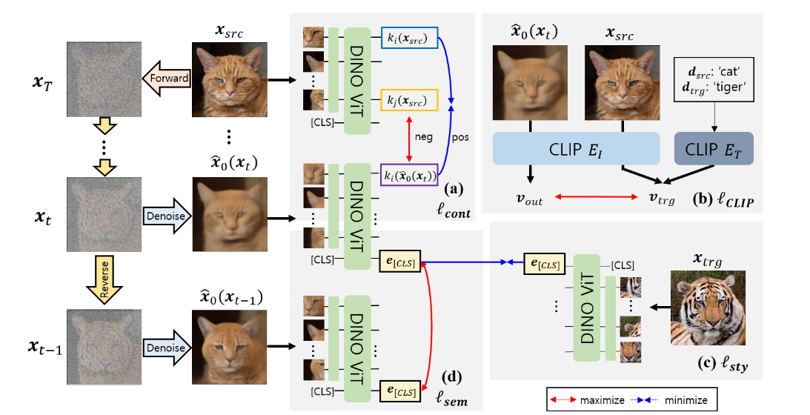
另外还有一些细节，比如在最开始做 resampling，还有一个正则化的引导项，都是借鉴了其他论文的提议，这里不细说了。总之，DiffuseIT 的做法其实没有什么新鲜的，但是看可视化效果，它确实做到了极大程度上保留构图而改变风格，不过这也归功于 splicing ViT 的发现。
虽然 DiffuseIT 把保留构图作为出发动机和核心卖点，但是个人觉得这种性质不一定适合所有的 Image-to-Image Translation. 比如，它非常适合冬天转夏天或者狮子转老虎，但是如果要把狗变成猫，那生成的猫就有个狗一样的长鼻子，长相着实怪异。如果能有个超参数让用户权衡风格与内容的保留程度就更好了。
点击查看 DiffuseIT 的生成样例（摘自论文）
Imagic
CVPR 2023 2022.10.17
DiffEdit
ICLR 2023 spotlight 2022.10.20
DiffEdit[9] 与 Prompt-to-Prompt[7] 的动机类似，即目前根据文本编辑图像的模型，如 Blended Diffusion、GLIDE 等都存在一些问题：
- 需要提供一个 mask 指定需要更改区域，否则整张图的内容会完全改变；
- mask 会丢弃掉原有内容的重要信息，这些语义信息在编辑时应保留。譬如，将狗变成猫不应该改变其颜色、姿态等。
因此，DiffEdit 旨在只使用文本来编辑图像中需要改变的区域，而不需要用户提供 mask. 其解决问题的思路如下图所示：
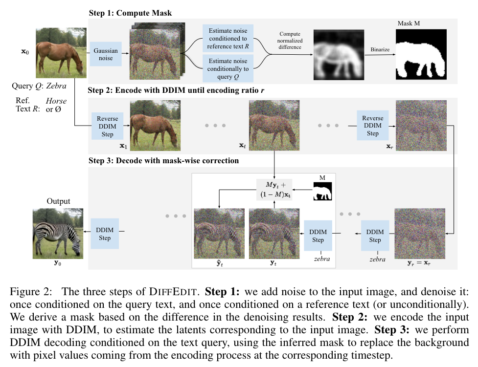
如上图所示，DiffEdit 包含三个步骤：首先通过比较两次逆向过程（一次以 ref. text 为条件或不带条件，另一次以 query 为条件）的差异生成 mask，然后通过 DDIM encoding (或称 DDIM inversion、reverse DDIM) 得到隐空间表示，最后加入 query 为条件、并用 mask guidance 方法 decode 得到输出图像。下面我们分别对这三个步骤做阐释。
Compute Mask
在对图像做一定程度的加噪后，用不同文本作为条件让扩散模型去噪，那么理论上两次噪声估计差异较大的地方就是需要编辑的地方。实际操作中，为了让效果更加稳定，作者加噪了 \(n=10\) 次并取平均，然后 rescale 到 \([0,1]\) 并以 \(0.5\) 的阈值二值化得到 mask. 这个 mask 往往比需要编辑的区域略大一点，对模型生成平滑过渡的图片有好处。
Encoding
依 DDIM encoding 过程走 \(r\) 步，得到原图的隐空间表示。作者称 \(r\) 为 encoding ratio，其值越大，可供编辑的空间越大，结果就越贴近文本描述，但同时也越偏离原图，而这种偏离可能是不需要的。
另外，encoding 用的是无条件模型，或者说取条件为 \(\varnothing\).
Decoding with mask guidance
以 query 为条件 decode，并施以 mask guidance: \(\tilde{\mathbf y}_t=M\mathbf y_t+(1-M)\x_t\).
这里产生了两个问题：
- 理论上我们要用无条件模型才能恢复原图，为什么 DiffEdit 还能够保证 mask 外内容不变？
- 为什么作者称 DiffEdit 在编辑的同时能够保留 mask 内原图的一部分语义信息（比如狗的颜色、姿态）？
这两个问题的关键在于 DiffEdit 用的是 DDIM 确定性编/解码而非 DDPM 的随机编/解码。作者推导了二者解码结果与原图之间的差异的界，发现前者在 \(r\) 小于某特定值（70% 左右）时更小，而小的关键在于噪声估计模型在有无条件下能产生相近的结果。
点击查看 DiffEdit 的生成样例（摘自论文）
Null-text Inversion
Google 2022.11.17
Null-text Inversion[10] 是 prompt-to-prompt 的续作，解决的是如何在真实图像上运用 prompt-to-prompt 的问题。相比合成图像，我们并不知道真实图像的 prompt、也不知道它对应的隐变量是什么，而这两点都是 prompt-to-prompt 需要事先知道的。对于第一个问题，使用现有的一些 image captioning 模型就行；对于第二个问题，最直接的想法就是 DDIM inversion. 然而，作者发现 DDIM inversion 在有 guidance 的情形下并不能较好地重建输入，因此作者希望找到更好的 inversion 方式。
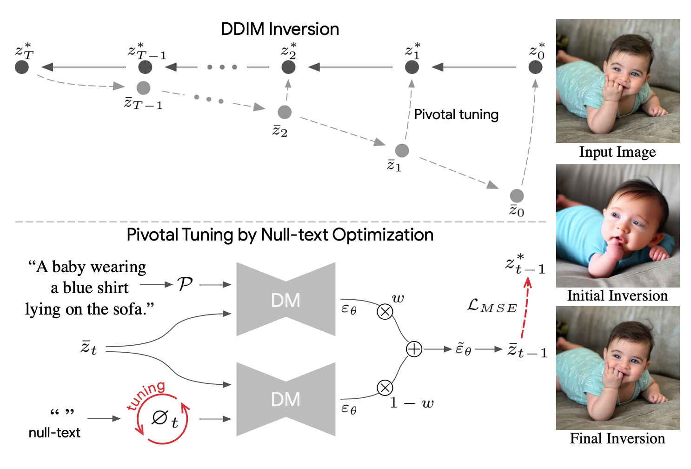
如上图上半部分所示，设 DDIM inversion 过程为 \(z_0^\ast\to z_1^\ast\to \cdots\to z_T^\ast\)，往回采样的过程为 \(z_T^\ast\to \bar z_{T-1}\to\cdots\to\bar z_1\to\bar z_0\). 二者每一步都会有一定的误差，在没有 guidance（即 \(w=1\)）的情形下，这些误差比较小，重建结果还是能几乎还原图像的。但是当 \(w>1\) 时，这些误差会被放大，导致重建结果与原图有明显的差异。而实践中我们常常依靠大 guidance scale（如 \(w=7.5\)）来生成高质量图像，因此这个问题必须得到解决。
我们现在仔细考虑采样过程的每一步。如上图下半部分所示，classifier-free guidance 会让网络推理两次，分别对应有条件（上分支）和无条件（下分支），二者结果依据 \(w\) 做线性组合得到这一步的最终预测值。由于 prompt-to-prompt 方法要利用文本条件和 attention map 之间的关系，所以我们并不想改变条件分支和网络权重，于是我们能改变的只有无条件分支的输入，也即 null-text embedding \(\varnothing_t\). 我们希望通过优化 \(\varnothing_t\)，使得采样过程能够重建出原图，这就是该方法的名字 null-text inversion 的意义。考虑到 \(w=1\) 下的 DDIM inversion 能较好的重建原图，我们自然想到以 \(z_{t-1}^\ast\) 作为目标，让 \(\bar z_{t-1}\) 去接近它，因此损失函数就是二者的 MSE.
实现上，由于采样过程是随时间步进行的，因此我们要按 \(t=T\to t=1\) 的顺序逐步训练——当前一步训练好之后，在前一步的采样基础之上训练下一步。另外，虽然原本的 null-text 对应的 embedding 只有一个全局的 \(\varnothing\)，但是作者发现为每一步都定义自己的 \(\varnothing_t\) 能大幅提高性能。综上所述，训练算法如下图所示：
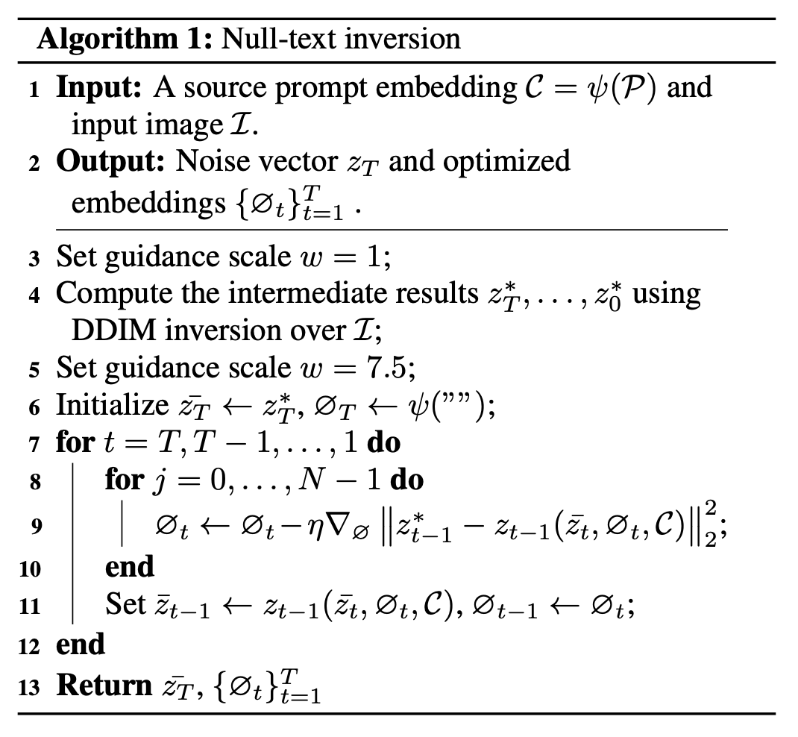
虽然对于每一个输入的真实图像都要跑一遍上述训练算法来做 inversion，但是作者称在 1 块 A100 上只需要 1min 就能得到较好的结果，还是能接受的。
总结一下，Null-text inversion 的亮点在于它揭示了 classifier-free guidance 下，结果受无条件分支的影响非常大，并成功地利用这种影响达到了重建输入图像的目的。换句话说，null-text inversion 可以看作是 DDIM inversion 在 classifier-free guidance 下的“修正”或“拓展”。另外，与 GAN inversion 不同，null-text inversion 改动的并不是传统意义上的隐变量 \(z_T\)，而是逆向过程的每一步中无条件分支的输入，这一点着实出乎了我的意料，令人眼前一亮。事实上，正因此特点，null-text inversion 除了可以搭配 prompt-to-prompt，还能搭配 SDEdit 并提升其效果。
点击查看 Null-text Inversion 的生成样例（摘自官网）


InstructPix2Pix
UCB 2022.11.17
前文中，Prompt-to-Prompt[7] 和 DiffEdit[9] 虽然都实现了文本编辑图像的功能，但它们的模式是「把描述原图的文本编辑为描述目标图像的文本」，对用户而言这并不是很自然。最自然的方式应该是给指令，例如 "Color the cars pink"、"Make it lit by fireworks" 等。为此，UCB 的研究人员提出了 InstructPix2Pix[11].
其实 InstructPix2Pix 的技术路线非常直接——构造一个（源图像、编辑指令、目标图像）三元组构成的数据集，然后拿预训练的 Stable Diffusion 在上面微调。构造数据集的方式如下图左侧所示：
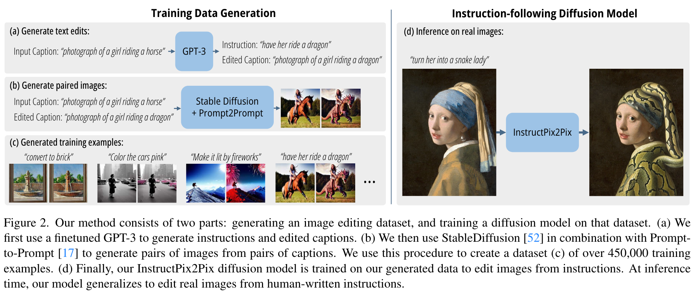
可以看到整体思路还是非常简单直接。先人为构造 700 条（源描述、编辑指令、目标描述）三元组构成的数据集，然后拿预训练的 GPT-3 在上面微调，使之能够根据源描述自动生成编辑指令和对应的目标描述。微调结束后，用 GPT-3 生成 450,000 多条数据，然后利用 Stable Diffusion 和 Prompt-to-Prompt 编辑方法分别生成源描述和目标描述对应的图像，这样就得到了用来训练的数据集。在这个数据集上微调 Stable Diffusion，将源图像和指令都作为模型的条件输入，即可让它遵循输入指令编辑图像了，如上图右侧所示。
众所周知，数据集的质量非常重要，因此作者用 Prompt-to-Prompt 时对每对文本描述都采用了不同的编辑强度生成了 100 对图像，然后用 directional CLIP similarity 做筛选。另外，由于模型输入有两个条件（源图像和编辑指令），所以采用 classifier-free guidance 时会有两个 guidace scale.
总而言之，InstructPix2Pix 虽然没有什么创新性 idea，但是非常实用。作者也在 HuggingFace Spaces 上放了一个 demo，可以随时玩耍。
点击查看 InstructPix2Pix 的生成样例（摘自官网）


Pix2pix-zero
CMU 2023.02.06
Pix2pix-zero 的目的是基于预训练的扩散模型通过文本来编辑真实图像，与 Null-text Inversion + Prompt-to-Prompt 比较相像，其方法如下图所示：
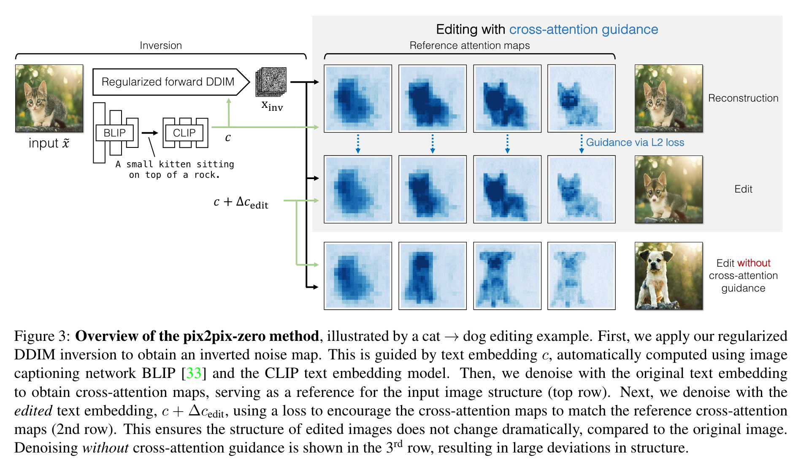
由图可见，pix2pix-zero 分为几个步骤——首先做 inversion 得到隐变量 \(\x_\text{inv}\)，然后重构原图并记录下采样过程的 cross-attention map，接下来在原始文本 embedding \(c\) 上加上编辑方向 \(\Delta c_\text{edit}\) 后重新采样，且对 cross-attention map 做 guidance，从而生成保留了原始图像构图的编辑图像。接下来我们分别对这些部分做详细叙述。
要基于预训练扩散模型做编辑，就免不了要做隐空间 inversion. 最直接的方法显然是 DDIM inversion. 但是作者指出，网络的输出 \(\epsilon_\theta(\x_t,t,c)\) 常常不符合标准正态分布，会损害编辑效果。因此，作者提出了 noise regularization 来约束它近似标准正态分布。
具体而言，作者用一个自相关目标函数 \(\mathcal L_\text{auto}=\mathcal L_\text{pair} + \lambda\mathcal L_\text{KL}\) 来引导逆向过程。其中，\(\mathcal L_\text{pair}\) 意图使得自相关函数符合 Kronecker delta function，但是考虑到计算各个像素两两之间的自相关系数过于费时，作者采用了一种巧妙的 pyramid 方式：设 \(\eta^0\in\mathbb R^{64\times64\times4}\) 是原始大小的预测噪声图 \(\epsilon_\theta\)，将其下采样（average pool，并乘 2 来保持方差）三次直到分辨率大小为 \(8\times 8\)，记作 \(\{\eta^0,\eta^1,\eta^2,\eta^3\}\)，然后定义： \[ \mathcal L_\text{pair}=\sum_p\frac{1}{S_p^2}\sum_{\delta=1}^{S_p-1}\sum_{x,y,c}\eta_{x,y,c}^p\left(\eta_{x-\delta,y,c}^{p}+\eta_{x,y-\delta,c}^{p}\right) \] 另外，作者添加了一个 KL 正则项（类似于 VAE）约束 \(\epsilon_\theta\) 为零均值、单位方差。两个损失函数通过超参数 \(\lambda\) 平衡。
寻找编辑方向 \(\Delta c_\text{edit}\)：给定一个原始词汇（cat）和编辑后的词汇（dog），随机生成两组分别包含它们的句子，计算两组的 CLIP embeddings 的平均差异，即得到编辑的方向。用一组句子而非一个句子能保证找到的 embedding direction 的健壮性。这个过程只需要大约 5 秒并且可以预处理，所以并不会降低效率。注意，这里原始词汇并不是描述输入图像的文本，只是想要编辑的东西。
提出 cross-attention guidance 保留不希望编辑的部分的构图：作者发现 cross-attention map 对应着生成图像的构图，所以通过保证编辑前后 cross-attention map 的一致性，可以保留原始构图不变。这个 idea 与 Prompt-to-Prompt 很像，但是本文作者是通过 L2 loss 来约束的，相比 Prompt-to-Prompt 的直接修改更“软”。
算法伪代码如下：
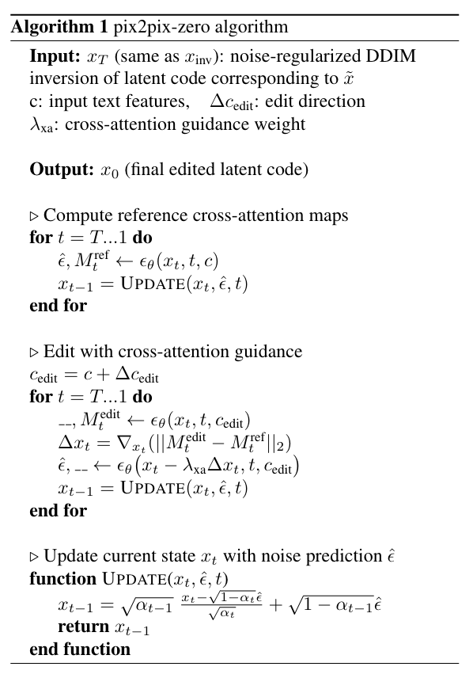
总的来说，由于之前已经看过不少 zero-shot image-to-image translation 的工作了，所以这篇文章带来的新鲜感没有那么强，但是也不失为一个很好的工作。
点击查看 pix2pix-zero 的生成样例（摘自官网）


References
- Kim, Gwanghyun, Taesung Kwon, and Jong Chul Ye. Diffusionclip: Text-guided diffusion models for robust image manipulation. In Proceedings of the IEEE/CVF Conference on Computer Vision and Pattern Recognition, pp. 2426-2435. 2022. ↩︎
- Avrahami, Omri, Dani Lischinski, and Ohad Fried. Blended diffusion for text-driven editing of natural images. In Proceedings of the IEEE/CVF Conference on Computer Vision and Pattern Recognition, pp. 18208-18218. 2022. ↩︎
- Liu, Xihui, Dong Huk Park, Samaneh Azadi, Gong Zhang, Arman Chopikyan, Yuxiao Hu, Humphrey Shi, Anna Rohrbach, and Trevor Darrell. More control for free! image synthesis with semantic diffusion guidance. In Proceedings of the IEEE/CVF Winter Conference on Applications of Computer Vision, pp. 289-299. 2023. ↩︎
- Nichol, Alex, Prafulla Dhariwal, Aditya Ramesh, Pranav Shyam, Pamela Mishkin, Bob McGrew, Ilya Sutskever, and Mark Chen. Glide: Towards photorealistic image generation and editing with text-guided diffusion models. arXiv preprint arXiv:2112.10741 (2021). ↩︎
- Song, Yang, and Stefano Ermon. Generative modeling by estimating gradients of the data distribution. Advances in neural information processing systems 32 (2019). ↩︎
- Choi, Jooyoung, Sungwon Kim, Yonghyun Jeong, Youngjune Gwon, and Sungroh Yoon. ILVR: Conditioning Method for Denoising Diffusion Probabilistic Models. In 2021 IEEE/CVF International Conference on Computer Vision (ICCV), pp. 14347-14356. IEEE, 2021. ↩︎
- Hertz, Amir, Ron Mokady, Jay Tenenbaum, Kfir Aberman, Yael Pritch, and Daniel Cohen-Or. Prompt-to-prompt image editing with cross attention control. arXiv preprint arXiv:2208.01626 (2022). ↩︎
- Kwon, Gihyun, and Jong Chul Ye. Diffusion-based image translation using disentangled style and content representation. arXiv preprint arXiv:2209.15264 (2022). ↩︎
- Couairon, Guillaume, Jakob Verbeek, Holger Schwenk, and Matthieu Cord. Diffedit: Diffusion-based semantic image editing with mask guidance. arXiv preprint arXiv:2210.11427 (2022). ↩︎
- Mokady, Ron, Amir Hertz, Kfir Aberman, Yael Pritch, and Daniel Cohen-Or. Null-text Inversion for Editing Real Images using Guided Diffusion Models. arXiv preprint arXiv:2211.09794 (2022). ↩︎
- Brooks, Tim, Aleksander Holynski, and Alexei A. Efros. Instructpix2pix: Learning to follow image editing instructions. arXiv preprint arXiv:2211.09800 (2022). ↩︎
- Parmar, Gaurav, Krishna Kumar Singh, Richard Zhang, Yijun Li, Jingwan Lu, and Jun-Yan Zhu. Zero-shot image-to-image translation. arXiv preprint arXiv:2302.03027 (2023). ↩︎